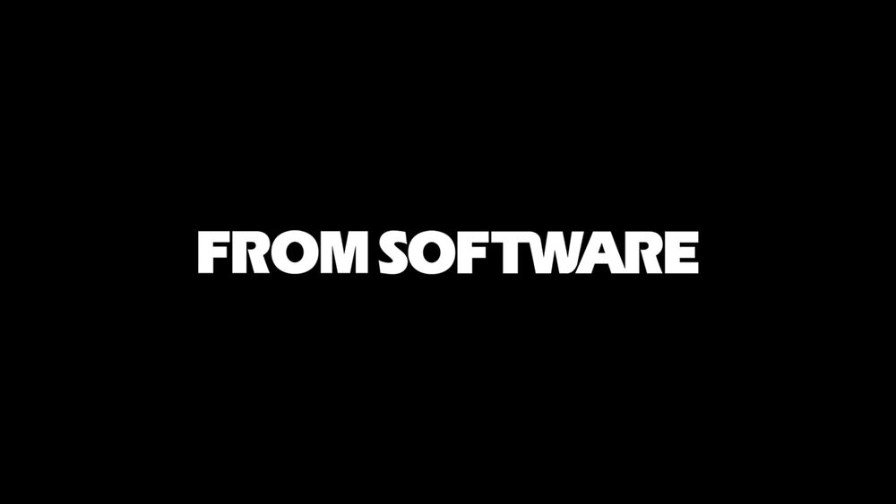

From Software is the developer of the enigmatic Dark Souls series, renknowned for their atmosphere, difficulty, online modes, and story. They are a japanese based company that has developed several cult classics among the years. They are not a very vocal company, sticking to their belief of "speak about new projects when they are ready". What they lack in a social media presence, they make up for with their announcements, which usually hype up a crowd of loyal fans regardless of the game or product. They have seen several deals and collaborations, particularly with Sony, in game development. Each game they produce has captivated gamers that enjoy the genres they encompass, always leaving them wanting more. Their twitter, @fromsoftware_pr, is where you can hear about any announcements made by the company.
Major Game Series
- King's Field
- Armored Core
- Dark Souls
- Demon's Souls
- Bloodborne